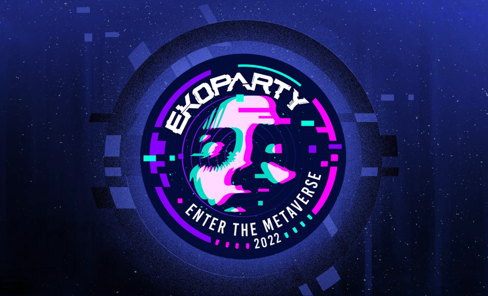
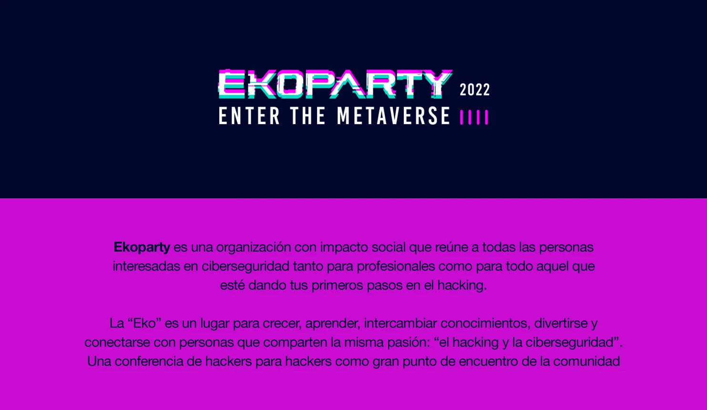
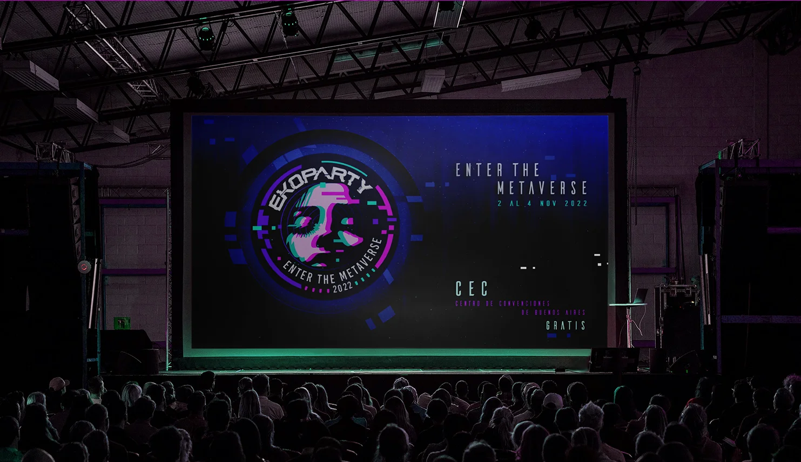
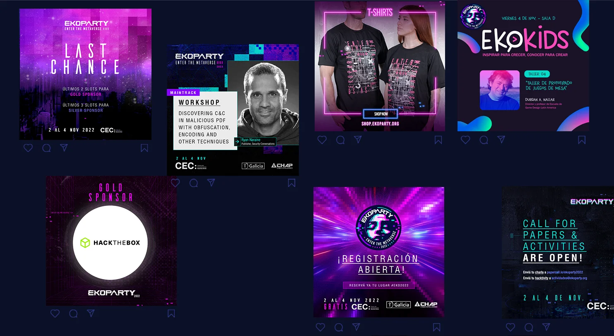
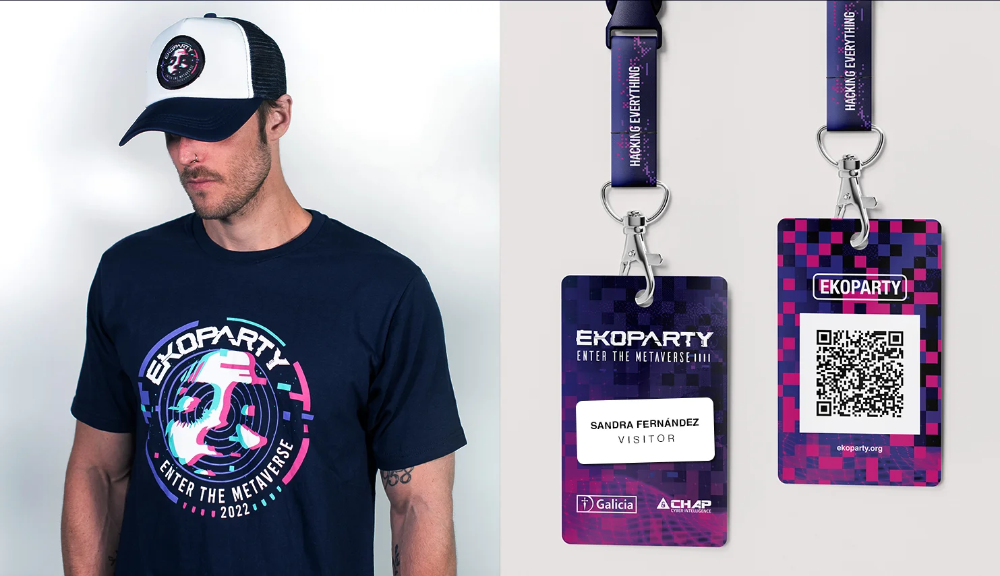
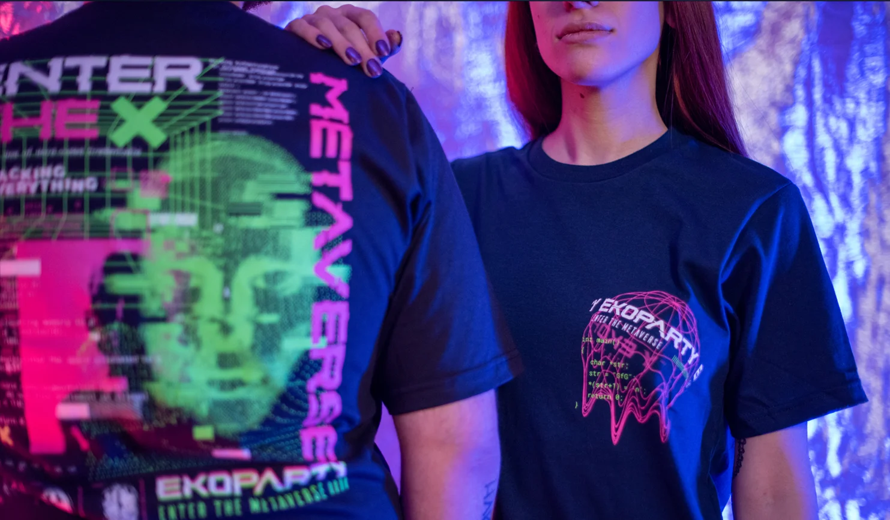
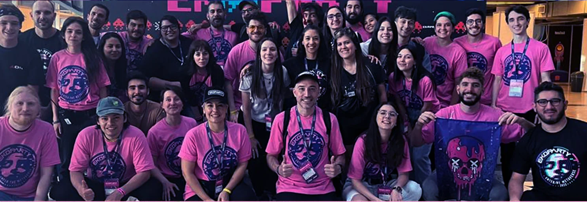
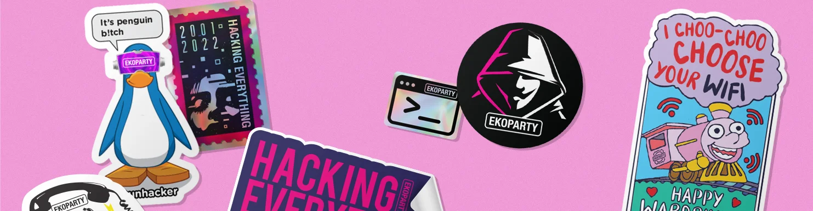
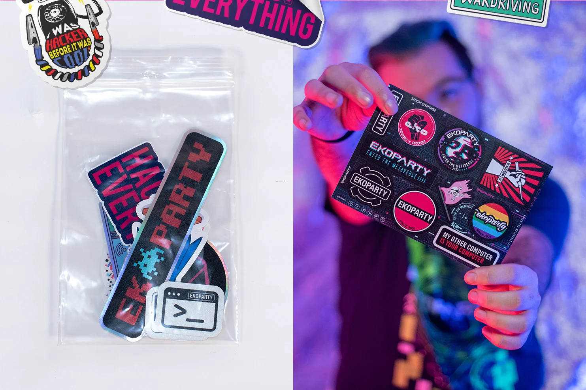
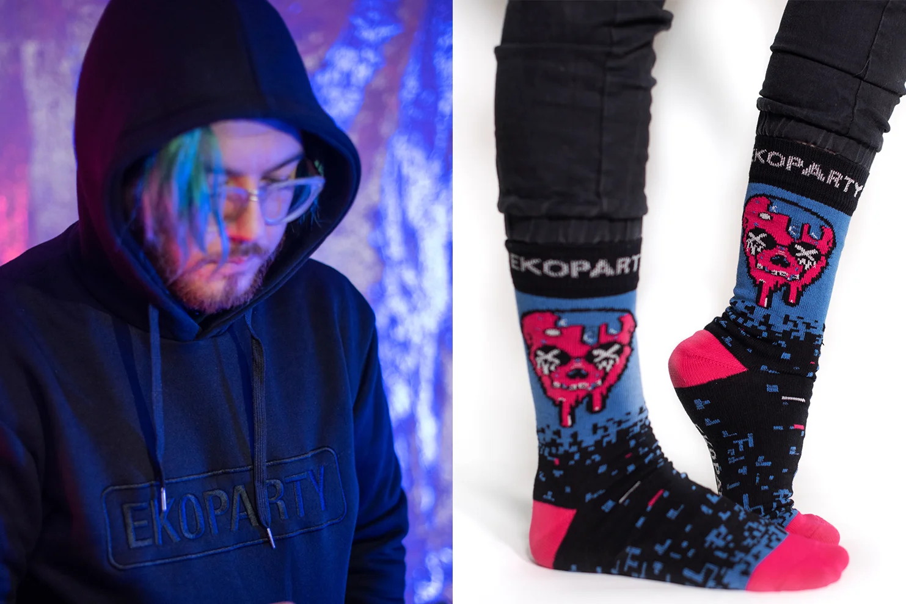

Identidad y campaña para la edición 2022 de la conferencia de seguridad informática más importante de Latinoamérica. Un sistema visual ciber, glitch y futurista que viajó del escenario a las redes sin perder fuerza.









